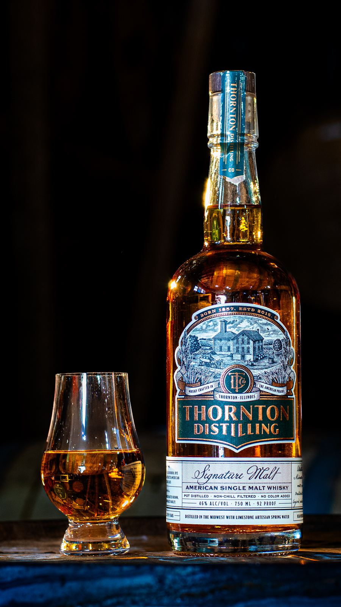

Thornton Distilling
Est. 1857 · Thornton, Illinois
Reserve
Drawn from the artesian well beneath our 1857 brewery. Malted from Illinois grain. Smoked with peat hand-harvested from the Mississippi. The first craft-malt single malt of the prairie.

Four malts — Brewers Pale, Munich, British Brown, Belgian Dark — matured in rum, rye, bourbon, and toasted American oak.
Tasting Notes →100% Illinois malted barley smoked with peat hand-harvested from the Mississippi. Bourbon-cask matured.
Tasting Notes →Hand-selected single-cask offerings for the true enthusiast. Cask type, proof, and mash bill printed in-house.
Tasting Notes →